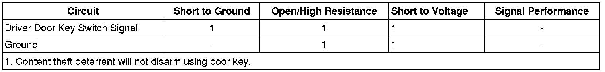

Content Theft Deterrent (CTD) Does Not Disarm with Key Lock
Content Theft Deterrent (CTD) Does Not Disarm with Key Lock
Diagnostic Instructions
* Perform the Diagnostic System Check - Vehicle (Initial Inspection and Diagnostic Overview) prior to using this diagnostic procedure.
* Review Strategy Based Diagnosis (Initial Inspection and Diagnostic Overview) for an overview of the diagnostic approach.
* Diagnostic Procedure Instructions (Initial Inspection and Diagnostic Overview) provides an overview of each diagnostic category.
Diagnostic Fault Information

Circuit/System Description
The content theft deterrent (CTD) system is a software based system in which the body control module (BCM) actively monitors certain inputs to determine if unauthorized vehicle access is being attempted. The driver door key cylinder switch is used as an input to disarm the CTD system. The driver door module (DDM) monitors the driver door key switch signal circuit to determine if the driver door cylinder is being rotated, indicating a vehicle key is being used to unlock the vehicle and the CTD system should be disarmed. The driver door key cylinder switch, located in the driver door latch assembly, provides a switched ground for the signal circuit. The DDM communicates the status of the driver door key cylinder switch to the BCM via serial data.
Reference Information
Schematic Reference
Door Lock/Indicator Schematics (Door Lock/Indicator Schematics)
Connector End View Reference
Component Connector End Views (Connector Views)
Description and Operation
Content Theft Deterrent (CTD) Description and Operation (Content Theft Deterrent (CTD) Description and Operation)
Electrical Information Reference
* Circuit Testing (Component Tests and General Diagnostics)
* Connector Repairs (Component Tests and General Diagnostics)
* Testing for Intermittent Conditions and Poor Connections (Component Tests and General Diagnostics)
* Wiring Repairs (Component Tests and General Diagnostics)
Scan Tool Reference
Control Module References (Programming and Relearning) for scan tool information
Circuit/System Verification
Ignition ON, verify the scan tool Door Key Cyl. Unlock Switch parameter cycles between Idle and Unlock while turning the driver door lock cylinder with the vehicle key.
Circuit/System Testing
1. Ignition OFF, disconnect the harness connector at the driver door latch assembly.
2. Ignition OFF, test for less than 10 ohms of resistance between the ground circuit terminal 8 and ground.
• If greater than the specified range, test the low reference circuit for an open/high resistance.
3. Ignition ON, verify the scan tool Door Key Cyl. Unlock Switch parameter is Idle.
• If not the specified value, test the signal circuit terminal 9 for a short to ground. If the circuit tests normal, replace the DDM.
4. Install a 3A fused jumper wire between the signal circuit terminal 9 and ground. Verify the scan tool Door Key Cyl. Unlock Switch parameter is Unlock.
• If not the specified value, test the signal circuit for a short to voltage or an open/high resistance. If the circuit tests normal, replace the DDM.
5. If all circuits test normal, test or replace the door latch assembly.
Component Testing
1. Ignition OFF, disconnect the harness connector at the driver door latch assembly.
2. Test for infinite resistance between the signal terminal 9 and the low reference terminal 8 with the switch in the open position.
• If not the specified value, replace the door latch assembly.
3. Test for less than 2.0 ohms of resistance between the signal terminal 9 and the low reference terminal 8 with the switch in the closed position.
• If greater than the specified range, replace the door latch assembly.
4. Test for infinite resistance between each terminal and the door latch assembly housing/case.
• If not the specified value, replace the door latch assembly.
Repair Instructions
Perform the Diagnostic Repair Verification (Verification Tests) after completing the diagnostic procedure.
* Front Side Door Latch Replacement (Service and Repair)
* Control Module References (Programming and Relearning) for DDM replacement, setup, and programming